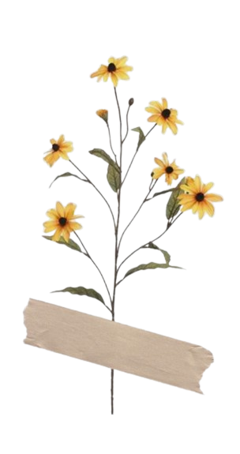
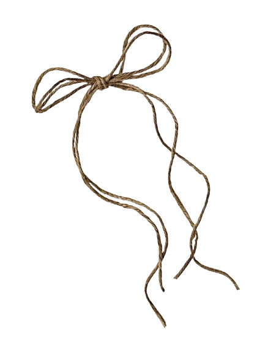

NoteNest is a cozy digital notebook designed to make note‑taking feel warm and personal. It is a modern React notes app designed for productivity and creativity. helps you organize your thoughts by creating notebooks, managing notes.
Whether you’re jotting down daily reflections, coding notes, or creative sketches, NoteNest keeps everything beautifully arranged and easy to revisit.

